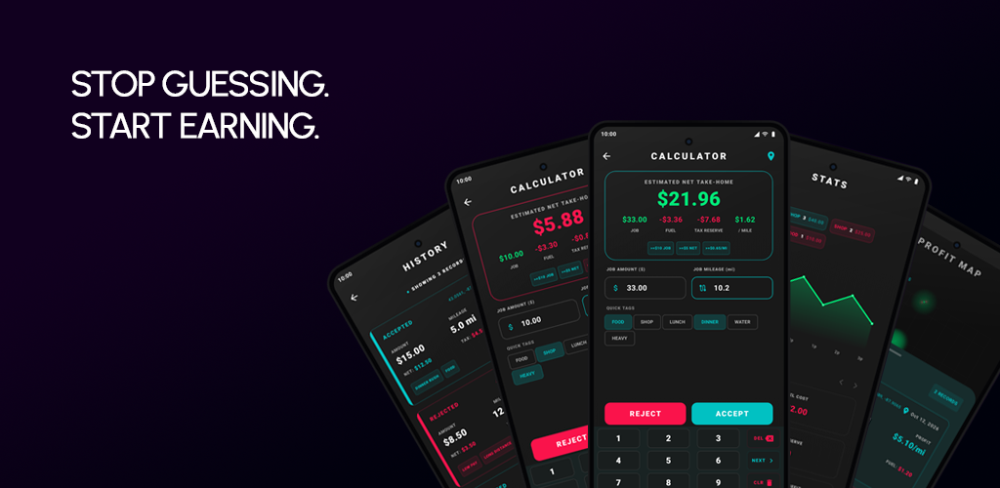

Initializing Systems...
CREAM CITY
SOFTWARE
Architecting high-precision tools for the modern era. Status: Deploying GridLog_v1.0 BETA
Architecting high-precision tools for the modern era. Status: Deploying GridLog_v1.0 BETA
The delivery game is rigged toward opacity. Between fuel, taxes, and physical toll, 'good' offers are often traps. GridLog was built to strip away the noise and provide raw, actionable profitability data in real-time.

Profitability Engine: Factor in fuel, taxes, and mileage to reveal true net earnings.
Labor Index: Tag jobs by difficulty or weight to identify high-friction routes.
Earnings Heatmaps: Visualise profit density across your service area (Premium).
To initialize your session and gain entry to the GridLog closed beta, complete the following authorization sequence:
Local-First Architecture. All active data is stored on your device. Cloud synchronization is used strictly for secure backups and disaster recovery.